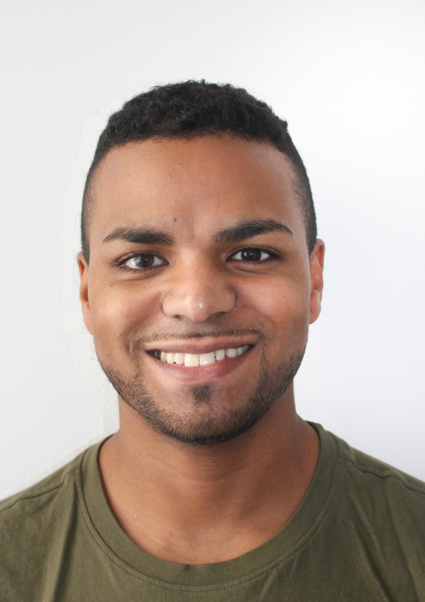

Mi siguiente etapa: tecnología
Quiero aplicar mis conocimientos, aprender en equipo y seguir desarrollándome profesionalmente.
Abierto a oportunidades
Reynaldo Galvizu.Abierto a oportunidades en tecnología
Soy Reynaldo Galvizu Sánchez.
Busco una oportunidad para incorporarme al sector tecnológico. Conecto mi experiencia en entornos técnicos con mi formación en informática y el dominio de herramientas de inteligencia artificial.
Mis proyectos en GitHubMi recorrido
Vengo de un entorno donde la responsabilidad, la precisión y la atención al detalle forman parte del trabajo. Ahora doy el siguiente paso hacia la informática.
Ver mi formaciónQuiero aplicar mis conocimientos, aprender en equipo y seguir desarrollándome profesionalmente.
Abierto a oportunidadesAsignaturas completadas; únicamente pendientes las prácticas. Formación en Python, Java, PostgreSQL, Docker y arquitectura de microservicios.
Orona S.COOP · Ene 2022 – Mar 2025
Ascensores Eninter · Sep 2020 – Dic 2021
Mantenimiento preventivo, correctivo y reparación de equipos de elevación.
Experiencias que forman parte de mi trayectoria profesional anterior.
Skills Galaxy
Selecciona una habilidad y descubre su lugar en mi formación. Sin barras de nivel: conocimientos con contexto.
Microsoft Office · AutoCAD · Responsabilidad · Atención al detalle
Project Gallery
Un vistazo a mis repositorios públicos. Código, herramientas y este pequeño rincón de internet.
2 proyectos visibles
Mi CV y portfolio web: formación, experiencia, habilidades y contacto en un solo lugar.
Colección de utilidades, herramientas y aplicaciones de ejemplo para casos de uso de software.
Formación e idiomas
Ingeniería, formación técnica y competencias para seguir aprendiendo.
Asignaturas completadas. Únicamente pendientes las prácticas para finalizar el grado.
Certificado de nivel B2 del MCER. Castellano y catalán completan mis idiomas.
Ver certificado ↗Acreditación de competencias en tecnologías de la información y la comunicación, expedida por la UOC.
Ver certificado ↗Ingeniería Eléctrica (4.º curso) · URV · 2015–2019.
IMAQ0110 · Instalación y mantenimiento de ascensores · 2020.
Contact Portal
Si mi perfil encaja con tu equipo, estaré encantado de hablar contigo.
reynaldo.gs@hotmail.com ↗Jornada completa · Incorporación inmediata